WDW CREATIVE STUDIO
The studio
A Stockholm branding agency for lifestyle brands.
Two of my bigger projects there have their own pages: YAY YAY and Staropramen. This page collects the rest.
What I did
Sketches, visual research, ideas for campaigns and brand activations, and presentations. The designers and project leads took most of the work to its final form.
I also ran user tests on WDW’s own website and presented UX improvements to the team. Some of them were built.
- Graphic design
- Sketching
- Visual research
- Ideation
- Campaigns
- Brand activations
- Presentations
- User testing
Tools I used
- Illustrator
- InDesign
- Photoshop
- Premiere Pro
- Gemini
A mix of projects
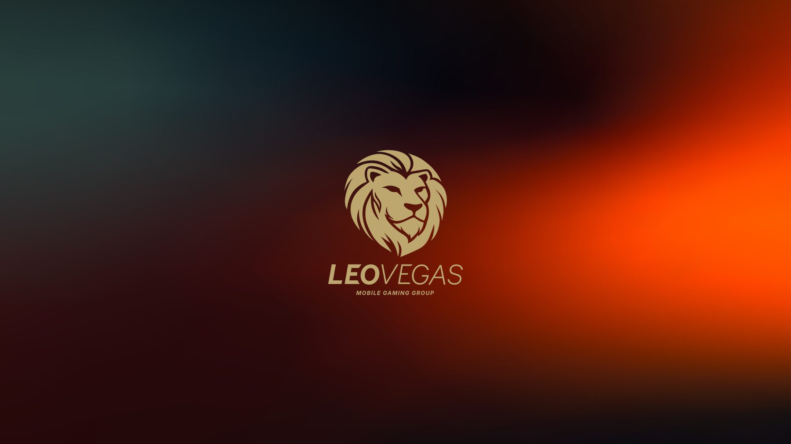
New logo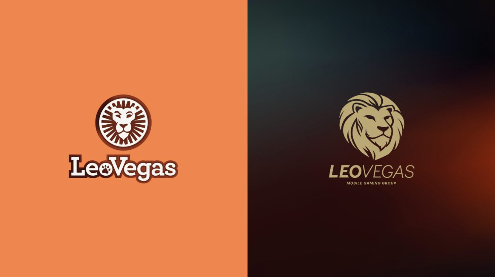
Before and after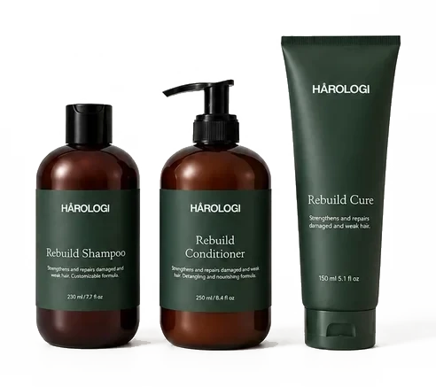
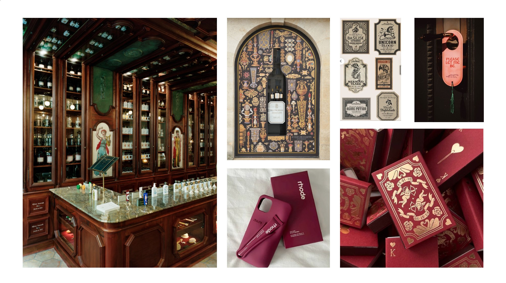
Moodboard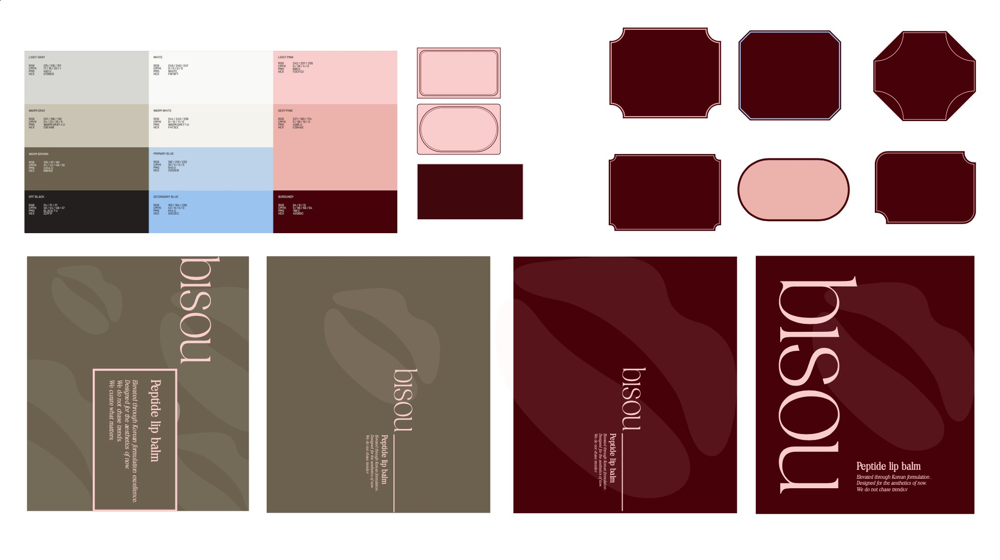
Colours and label shapes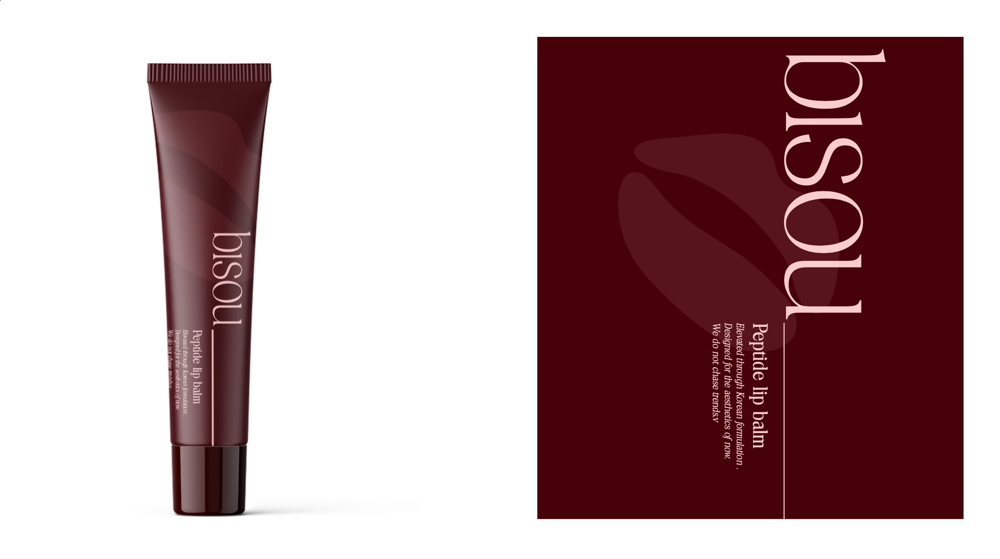
Concept, burgundy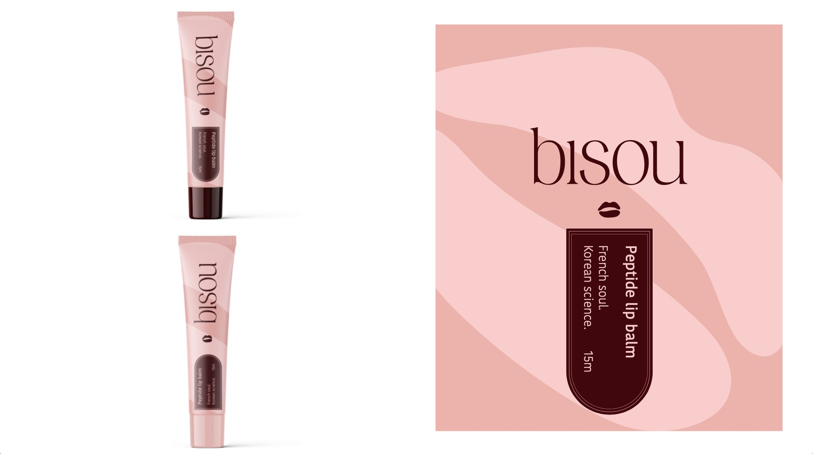
Concept, pink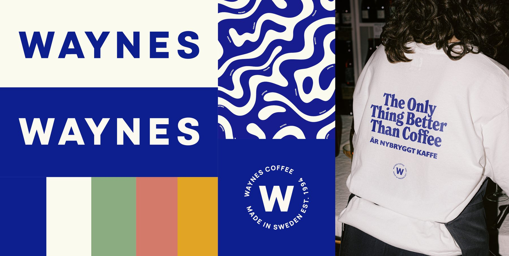
Final identity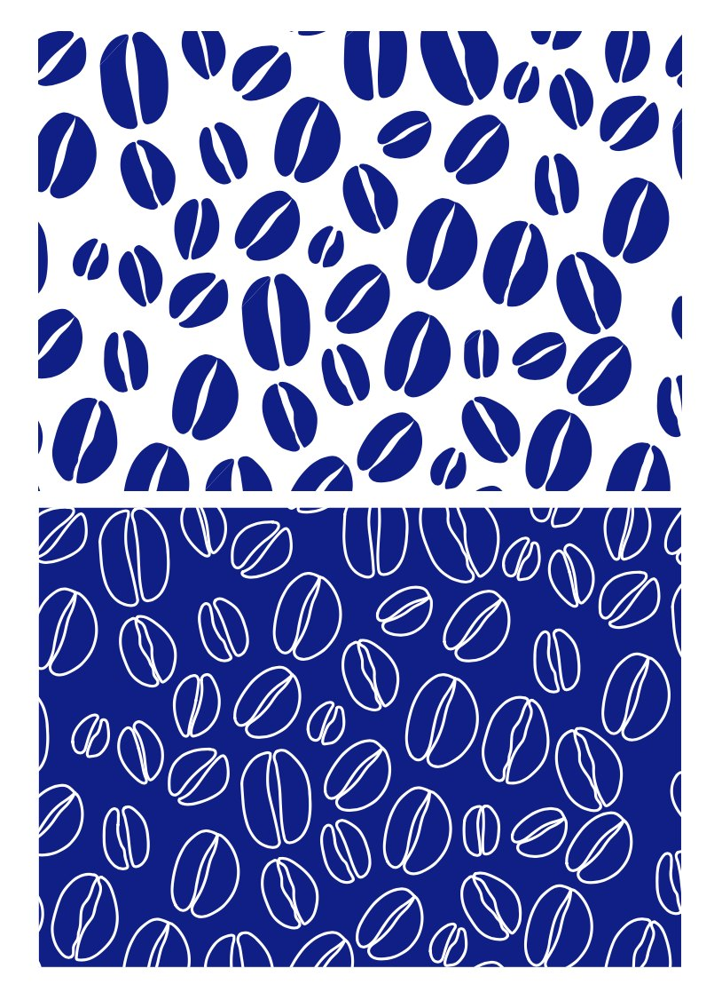
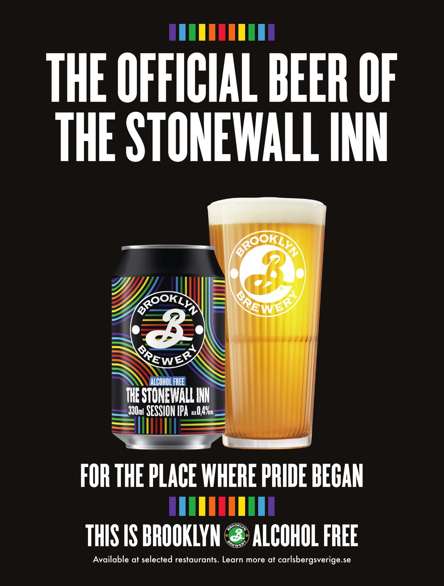
Print ad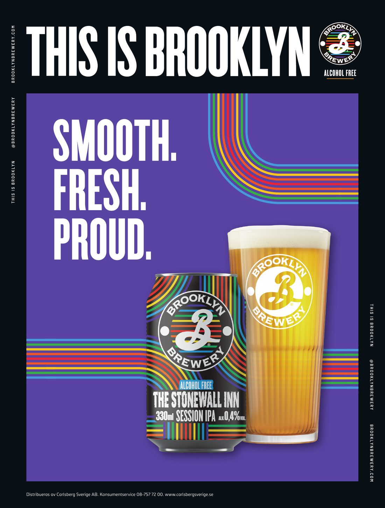
Print adWhat I learned
How a studio takes an idea from brainstorm to client presentation, and how to adapt to very different brands.